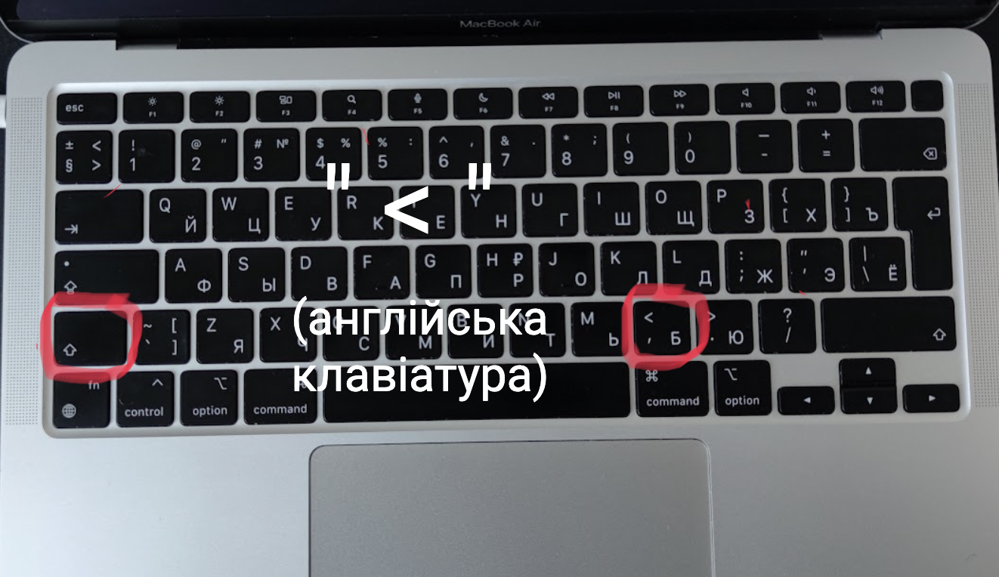
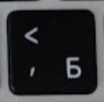

Часто при наборі тексту у нових користувачів макбуків виникають проблеми з пошуком деяких букв та символів на клавіатурі мак. Тож я вирішив показати на зображенні де знаходиться знак менше "<".
Знак менше "<" на мак (англійська мова клавіатури)

Щоб поставити знак менше необхідно перемкнутися на англійську мову клавіатури. Затисніть клавішу SHIFT (  ) та натиснути кнопку з буквою Б (
) та натиснути кнопку з буквою Б (
Приклади використання символу <
Символ < використовується в різних контекстах залежно від мови програмування, операційної системи або форматування тексту. Ось кілька прикладів:
У HTML, символ
<використовується для позначення тегів, наприклад:''' <h1>Hello</h1> '''
Ця мітка створює заголовок першого рівня у HTML документі.
Загалом, символ
<використовується для позначення початку тегу HTML, а символ>використовується для позначення кінця цього елемента.У командному рядку в операційній системі, символ
<використовується для перенаправлення вводу з файлу у команду, наприклад:sort < file.txtЦя команда сортує рядки у файлі
file.txt.У Markdown, символ
<можна використовувати для позначення посилань, наприклад:[Текст посилання](URL-адреса)Це створить посилання з текстом
Текст посилання, яке веде до URL-адреси.Символ
<може бути використаний в математичних операціях, особливо в порівняннях. Наприклад, у математиці,<означає "менше за", і використовується для порівняння двох значень. Наприклад:
2 < 5- це істинне вираз, оскільки 2 менше за 510 < 5- це хибний вираз, оскільки 10 не менше за 5.
У математичних формулах < може бути використаний як частина виразів, таких як діапазони чисел або нерівності. Наприклад, якщо ви хочете виразити діапазон чисел від 1 до 5, ви можете використовувати символ <:
1 < x < 5- це означає, що x є числом, яке більше за 1 і менше за 5.
У деяких математичних областях, наприклад, в теорії множин, символ < може мати інші значення та використовуватися для позначення включення або відношення підмножини.
Дізнайтесь розміщення інших символів на клавіатурі макбуку на сторінці: Клавіатура мак.